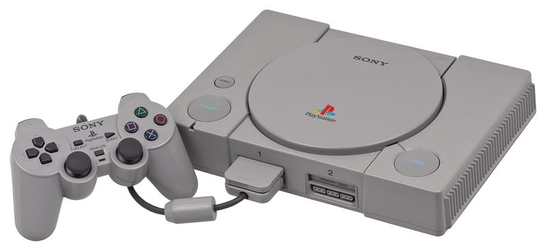
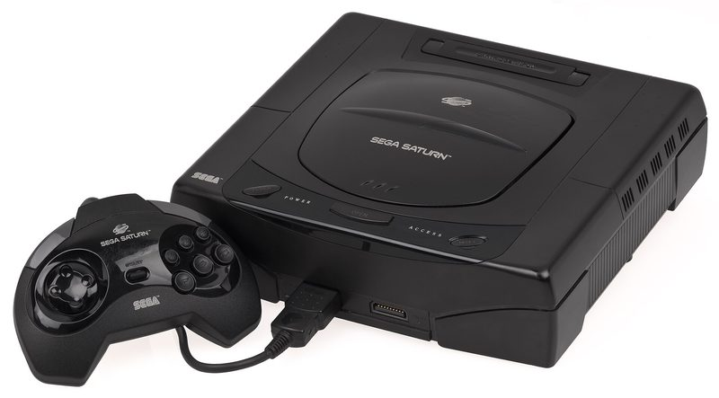
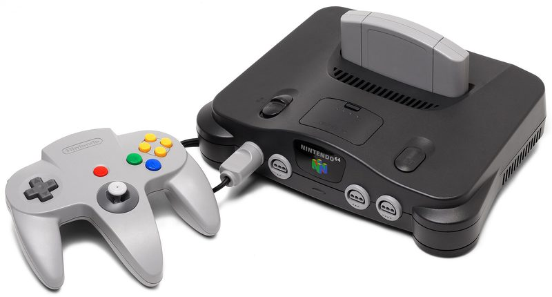
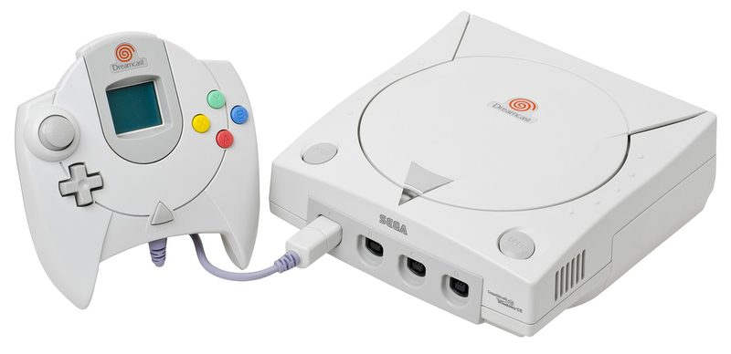
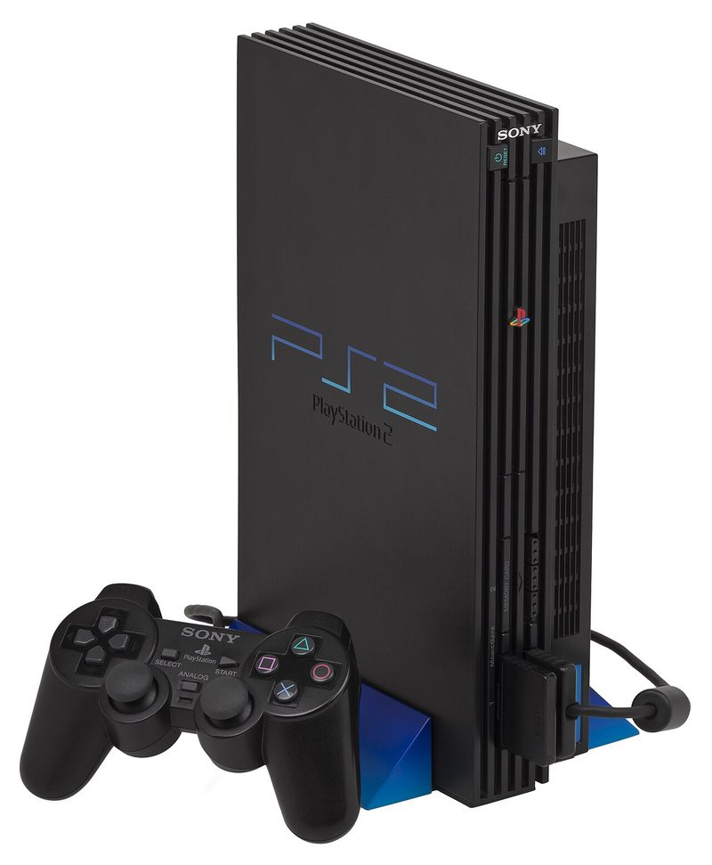
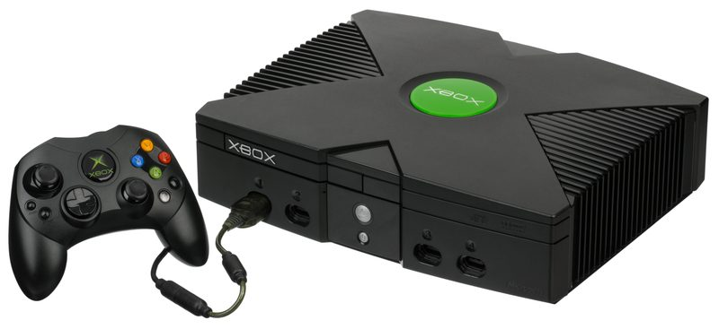
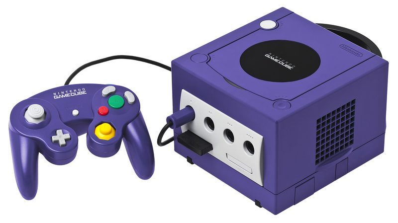

The 3D Revolution (1995–2005)
In the mid-1990s, flat 2D worlds gave way to 3D. Cartridges started to be replaced by CDs and DVDs, which could hold far more data. Sony entered the market, Sega made its last consoles, and Microsoft joined the race.

PlayStation
Released: 1995 | Maker: Sony
Sony's first console used CDs instead of cartridges. CDs were cheaper to make and held much more, which allowed games with full video scenes and big 3D worlds, like Final Fantasy VII. The PlayStation became the first console to sell more than 100 million units.

Sega Saturn
Released: 1995 | Maker: Sega
Sega surprised everyone by launching the Saturn months early, but the console was expensive and difficult for developers to program. It struggled in North America against the cheaper PlayStation.

Nintendo 64
Released: 1996 | Maker: Nintendo
The Nintendo 64 kept using cartridges, but it introduced an analog control stick that made moving around 3D worlds feel natural. Super Mario 64 showed how 3D platform games should work, and its four controller ports made it a favorite for multiplayer games like GoldenEye 007.

Dreamcast
Released: 1999 | Maker: Sega
The Dreamcast was ahead of its time, with a built-in modem for online play. Even so, it could not compete once the PlayStation 2 was announced, and Sega stopped making consoles in 2001 to focus on making games.

PlayStation 2
Released: 2000 | Maker: Sony
The PS2 could also play DVD movies, which made it a popular purchase when DVD players were still expensive. It could also play most original PlayStation games. According to Sony, the PS2 has sold more than 160 million units, making it one of the best-selling consoles of all time.

Xbox
Released: 2001 | Maker: Microsoft
Microsoft's first console had a built-in hard drive and launched with Halo: Combat Evolved. In 2002, Microsoft added Xbox Live, an online service that made playing with friends over the internet easy.

Nintendo GameCube
Released: 2001 | Maker: Nintendo
The GameCube used small 8-centimeter discs and had a compact, cube-shaped design with a handle on the back. It was home to games like Super Smash Bros. Melee and sold about 22 million units.
The PlayStation 2 Start-Up Screen
The PlayStation 2 start-up animation, recorded on a real console.
Console photos from Wikimedia Commons.
Next stop: the HD & Online Era.